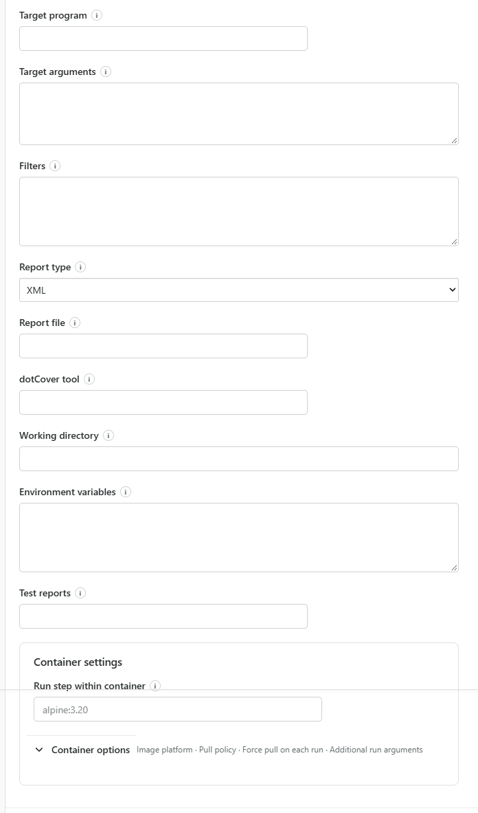

dotCover
Runs a program under the dotCover command line tool and writes a coverage report in HTML, XML or JSON.
When to use it
Use it to measure how much of your C# code your tests reach. The target is usually dotnet with test, or a test console runner. The tool has its own licence, which the step does not check.
How to set it up
- Open the build configuration and click Settings › Build Steps.
- Click Add build step. Type
dotCoverin Filter step types if you like, then click the dotCover tile (group Code quality and coverage). - Type a Step name, for example
Coverage. - Fill in the fields described below.
- Optional: set Execute step, Conditions and Retry on failure. See The steps list and the step editor.
- Click Save.

Every field
| Field | What it does | Default | Example |
|---|---|---|---|
| Target program | The program run under coverage, such as dotnet or a test console runner. | Empty (required) | dotnet |
| Target arguments | One argument per line. dotCover takes them as one string, so an argument with a space is put in double quotes. | Empty | test then Tests/Game.Tests.csproj |
| Filters | One filter per line, joined with semicolons, such as +:MyApp.* or -:*.Tests. Empty covers everything dotCover finds. | Empty | +:Game.* |
| Report type | XML, HTML, JSON or Detailed XML. | XML | HTML |
| Report file | Relative to the working directory. Empty writes dotCover.xml, dotCover.html or dotCover.json. | Empty | reports/coverage.html |
| dotCover tool | Path of the dotCover command line tool. Empty takes dotCover from the PATH. | Empty | C:\tools\dotCover\dotCover.exe |
| Working directory, Environment variables, Test reports, Run step within container | The same in every runner. See Fields every runner has. |
A worked example
Measure the coverage of the game library tests. Step name Coverage, Target program dotnet, Target arguments test and Tests/Game.Tests.csproj, Filters +:Game.*, Report type HTML.
What you see when it runs
The console shows the dotCover command and the target's output. The build page shows the coverage totals, with the report archived.
Problems and fixes
| Problem | What to do |
|---|---|
| The dotCover command was not found on this agent | Install the dotCover command line tool or put dotCover on the PATH. |
| The dotCover step has no target program | Fill in Target program. |
| No … coverage report was found | The target may have stopped before the report was written. |